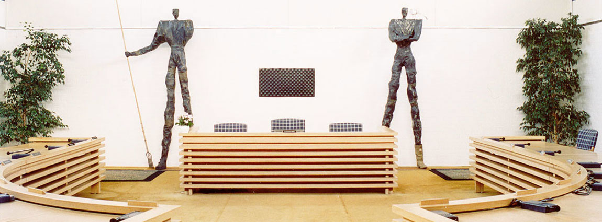

Mine visioner og mål med mit arbejde er at skabe nogle gode og mindeværdige oplevelser, men stadig opretholde en seriøs tone over mit arbejde. Jeg kan rigtig godt lide at eksperimentere med mine egne værker. Jeg er ikke bange for at gøre noget anderledes.
Arbejdsområder Egne værker
Min egen kunst
Jeg arbejder med mange forskellige materialer. Derudover skal det nævnes, at billederne på min side er ikke alle, men billeder tilbage til 1980'erne og frem efter.
Jeg er typen, som godt kan finde på at gøre nogle spontane ting - måske lidt vilde ting, som andre vil kalde det.
Udstilling: Folk og fjord, Nibe
I samarbejde med Kulturelt Samråd åbnede jeg en udstilling i Nibes byrådssal. Jeg valgte temaet "Folk og fjord" på baggrund af stedet, rummet og folket i Nibe, da det handler om at fornemme, hvor man udstiller.
Udstillingen omfattede skulturer i gips/jern og malerier.

Aalborgdagene
Jeg har også været med til at udarbejde værker til Aalborgdagene. Jeg var nede og lave udsmykning på teaterhuset, også kom jeg ud bagefter, og så nogle mennesker der malede et skib i mange forskellige farver.
Jeg rullede nogle meter blåt materiale ud. Så viklede vi hinanden ind i dem, og så sejlede vi over til Nørresundby. Også var det søsætningen. Vi kom over på den anden side uden stof, og var blå på arme og ben. Det var en morsom oplevelse, da vi senere skulle tage bussen tilbage.